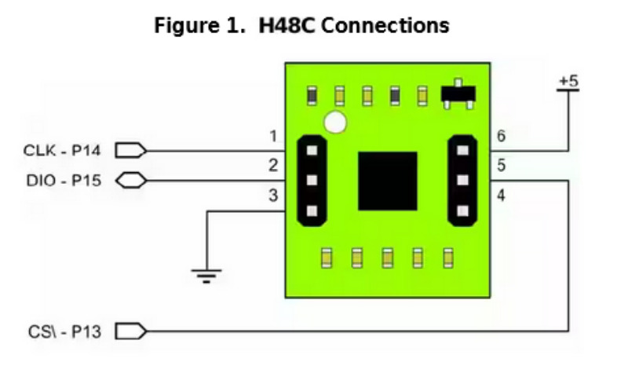

pj3 <<
Previous Next >> H48C
Arduino
https://github.com/mdecycu/pj40922/releases/tag/v0.0.246
https://youtu.be/67Su8OhVuLs
https://kristianlindroos.wordpress.com/2012/05/18/3-axis-accelerometer-h48c-with-arduino-final-project-blender-bluetooth-and-graphical-interface/
https://docs.arduino.cc/hardware/nano-33-ble-sense
https://circuitdigest.com/microcontroller-projects/arduino-nano-33-ble-sense-board-review-and-getting-started-guide
arduino-projects-book.pdf
arduino-and-nano33-ble-sense.pdf
EmbeddedControllers.pdf
ArduinoHandout1.pdf
https://realpython.com/arduino-python/
The Full Arduino Uno Pinout Guide [including diagram] (circuito.io)
https://youtu.be/865IqPfPWcM (ToF sensing)
Gravity VL53L0X ToF Laser Range Finder, for Arduino Board
I2C:
https://ithelp.ithome.com.tw/m/articles/10269863
https://wiki.dfrobot.com/Gravity__VL53L0X_ToF_Laser_Range_Finder_SKU_SEN0245
https://www.dfrobot.com/product-2179.html
MMA7455 Three-Axis Accelerometer
https://www.mouser.com/datasheet/2/321/28526-MMA7455-3axisAccel-v1.1-34665.pdf
http://www.arduinolearning.com/learning/basics/mma7455-accelerometer-example.php
https://codebender.cc/sketch:71649#MMA7455_Demo.ino
Hitachi H48C Tri-Axis Accelerometer Module (No I2C)
https://forum.arduino.cc/t/hitachi-h48c-3-axis-arduino/10499/4
https://www.digikey.be/htmldatasheets/production/976149/0/0/1/h48c.html
introduction_to_electronics.pdf (source)
https://www.inzarsalfikar.com/2010/01/rangkaian-parallax-hitachi-3g-tri-axis.html
https://forum.arduino.cc/t/hitachi-h48c-3-axis-arduino/10499/5
https://playground.arduino.cc/Main/ParallaxH48C/

connections to Arduino:
CLK to pin 13
DIO to pin 12
CS to pin 11
Program to read sensor data:
//// VARS
int CS_pin = 11;
int DIO_pin = 12;
int CLK_pin = 13;
byte tempLSB = 0;
byte tempMSB = 0;
int aX = 0;
int aY = 0;
int aZ = 0;
//// FUNCTIONS
void StartMassurement() {
pinMode(DIO_pin, OUTPUT);
digitalWrite(CS_pin, LOW);
digitalWrite(CLK_pin, LOW);
delayMicroseconds(1);
digitalWrite(DIO_pin, HIGH);
digitalWrite(CLK_pin, HIGH);
delayMicroseconds(1);
}
void ShiftOutNibble(byte DataOutNibble) {
for(int i = 3; i >= 0; i--) { // i = 3 ... 2 ... 1 ... 0
digitalWrite(CLK_pin, LOW);
// set DIO first
if ((DataOutNibble & (1 << i)) == (1 << i)) { // DataOutNibble AND 1 x 2^i Equals 1 x 2^i ?
digitalWrite(DIO_pin, HIGH);
}
else {
digitalWrite(DIO_pin, LOW);
}
// with CLK rising edge the chip reads the DIO from arduino in
digitalWrite(CLK_pin, HIGH);
// data rate is f_clk 2.0 Mhz --> 0,5 micro seeconds
delayMicroseconds(1); // :-) just nothing
}
}
void SampleIt() {
digitalWrite(CLK_pin, LOW);
delayMicroseconds(1);
digitalWrite(CLK_pin, HIGH);
delayMicroseconds(1);
pinMode(DIO_pin, INPUT);
digitalWrite(CLK_pin, LOW);
delayMicroseconds(1);
digitalWrite(CLK_pin, HIGH);
if (digitalRead(DIO_pin)== LOW) {
// Blink LED because ok
}
}
byte ShiftInNibble() {
byte resultNibble;
resultNibble = 0;
for(int i = 3 ; i >= 0; i--) {
// The chip Shift out results on falling CLK
digitalWrite(CLK_pin, LOW);
delayMicroseconds(1); // :-) just nothing
if( digitalRead(DIO_pin) == HIGH) {
resultNibble += 1 << i;
}
else {
resultNibble += 0 << i;
}
digitalWrite(CLK_pin, HIGH);
}
return resultNibble;
}
void EndMessurement() {
digitalWrite(CS_pin, HIGH);
digitalWrite(CLK_pin, HIGH);
}
int GetValue(byte Axis) { // x = B1000, y = 1001, z = B1010
int Result = 0;
StartMassurement();
ShiftOutNibble(Axis);
SampleIt();
Result = (ShiftInNibble() << 8) + (ShiftInNibble() << 4) + ShiftInNibble();
EndMessurement();
return Result;
}
//// SETUP
void setup() {
Serial.begin(57600);
pinMode(CS_pin, OUTPUT);
pinMode(CLK_pin, OUTPUT);
pinMode(DIO_pin, OUTPUT);
// initialize device & reset
digitalWrite(CS_pin,LOW);
digitalWrite(CLK_pin,LOW);
delayMicroseconds(1);
digitalWrite(CS_pin, HIGH);
digitalWrite(CLK_pin,HIGH);
}
//// LOOP
void loop() {
Serial.print(2048 - GetValue(B1000));
Serial.print(" ");
Serial.print(2048 - GetValue(B1001));
Serial.print(" ");
Serial.print(2048 - GetValue(B1010));
Serial.println("");
}
from https://kristianlindroos.wordpress.com/
import serial
import Blender
import bpy
ob = Blender.Object.GetSelected()
obj = ob[0]
t = 0
s = serial.Serial(“/dev/ttyACM0”, 115200)
x = 0.0
y = 0.0
z = 0.0
f = “” # char buffer
k = “” # next char
while (t < 5000):
k = s.read()
if (k == ‘z’):
z = float(f) / 500.0
obj.setEuler(x, y, 0.0) # Z-Axis not used because it produces some unintuitive results
Blender.Window.Redraw()
f = “”
elif (k == ‘x’):
x = float(f) / 255.0 # you can change this value to your taste
f = “”
elif (k == ‘y’):
y = float(f) / 255.0 # you can change this value to your taste
f = “”
else:
f += k
t += 1
pj3 <<
Previous Next >> H48C